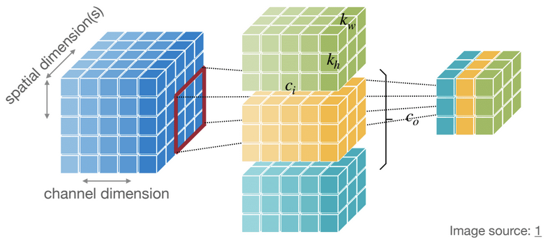
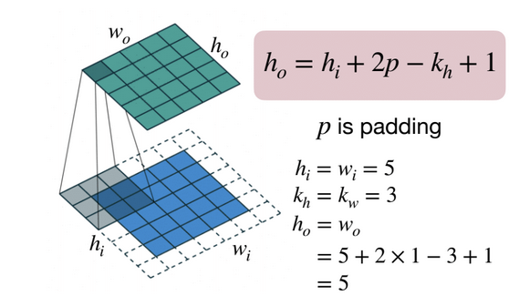
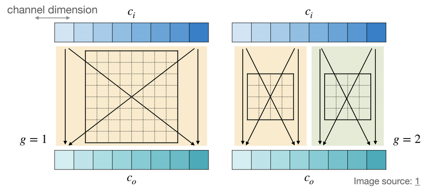
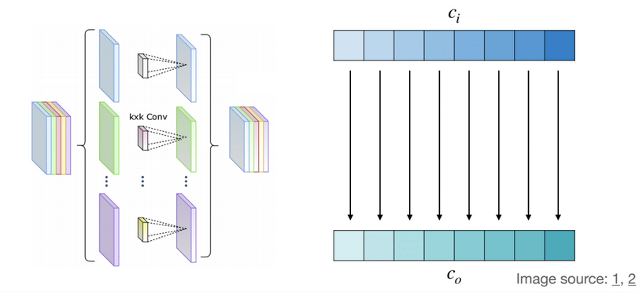
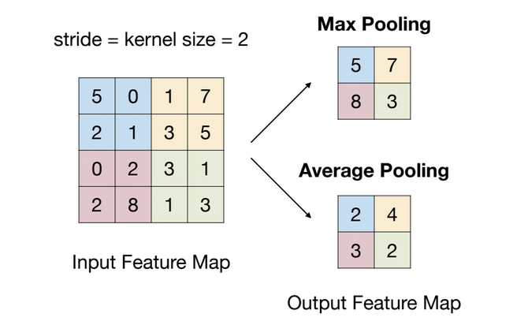
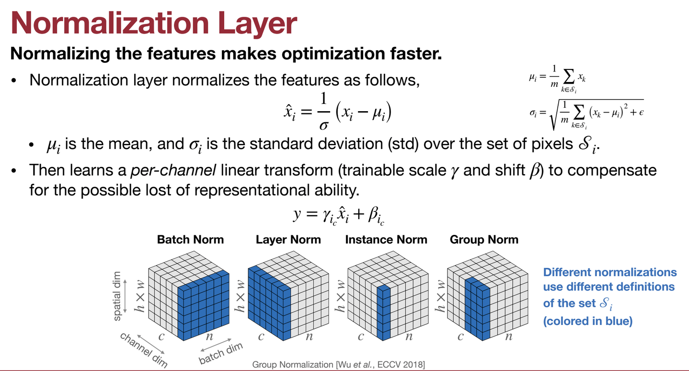
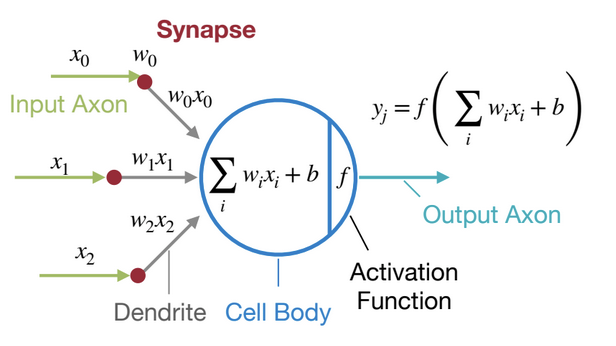
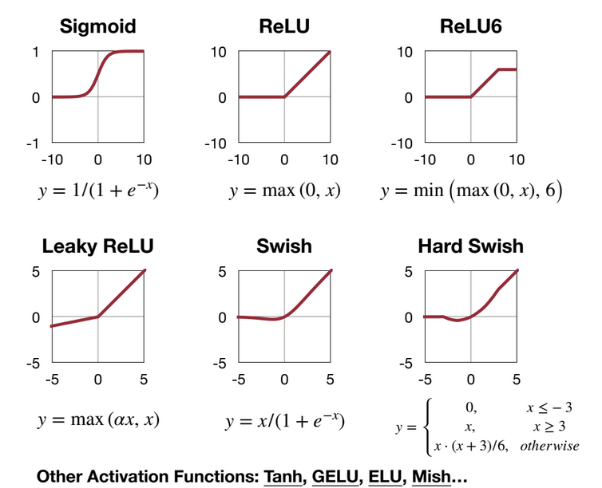

Linear Layer (Fully-Connected Layer)¶
output neuron is connected to all input neurons
-
shape of tensors:
-
Input Features X: \((n,c_i)\)
-
Output Features Y: \((n,c_o)\)
-
Weights W: \((c_o,c_i)\)
-
Bias b: \((c_o,)\)
notations meanings n batch size \(c_i\) input channels \(c_o\) output channels -
Convolution Layer¶
output neuron is connected to input neurons in the receptive field
-
shape of tensors:
1D conv 2D conv Input Features X \((n,c_i,w_i)\) \((n,c_i,h_i,w_i)\) Output Features Y \((n,c_o,w_o)\) \((n,c_o,h_o,w_o)\) Weights W \((c_o,c_i,k_w)\) \((c_o,c_i,k_h,k_w)\) Bias b \((c_o,)\) \((c_o,)\) conv3d

\[ h_o=h_i-k_h+1 \\ w_o=w_i-k_w+1 \]notations meanings n batch size \(c_i\) input channels \(c_o\) output channels \(h_i,h_o\) input/output height \(w_i,w_o\) input/output width \(k_h\) kernel height \(k_w\) kernel width
Padding Layer¶
Padding can be used to keep the output feature map size is the same as input feature map size
padding

Strided Convolution Layer¶
\(s\) for stride, \(p\) for padding
Grouped Convolution Layer¶
A group of narrower convolutions
-
shape of tensors:
-
Input Features X: \((n,c_i,h_i,w_i)\)
-
Output Features Y: \((n,c_o,h_o,w_o)\)
-
Weights W: \((g \cdot c_o/g,c_i/g, k_h,k_w)\)
-
Bias b: \((c_o,)\)
group convolution

-
Depthwise Convolution Layer¶
Independent filter for each channel: \(g=c_i=c_o\) in grouped convolution
-
shape of tensors:
-
Input Features X: \((n,c_i,h_i,w_i)\)
-
Output Features Y: \((n,c_o,h_o,w_o)\)
-
Weights W: \((c,k_h,k_w)\)
-
Bias b: \((c_o,)\)
depthwise convolution

-
Pooling Layer¶
Downsample the feature map to a smaller size
-
The output neuron pools the features in the receptive field, similar to convolution
- Usually, the stride is the same as the kernel size: \(s=k\)
-
Pooling operates over each channel independently.
- No learnable parameters
pooling

Normalization Layer¶
Normalizing the features makes optimization faster
normalization

Activation Function¶
typically non-linear functions
the last layer of a neural network

different activation funcs

Transformers¶
understand the keys, queries, and values in attention mechanisms?